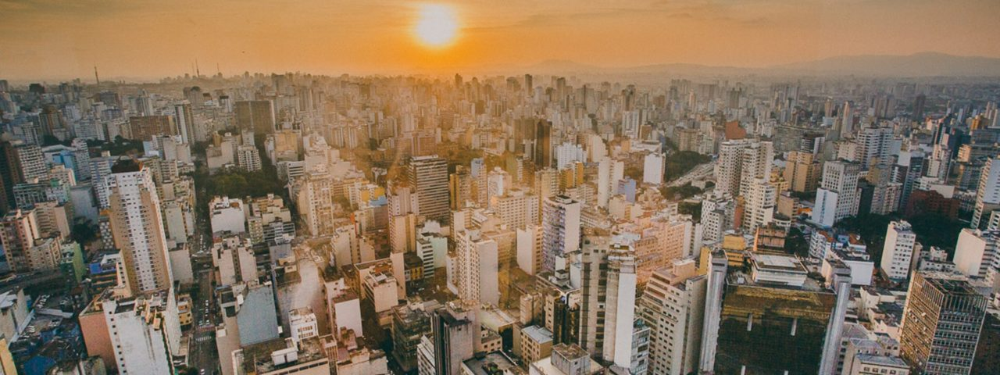
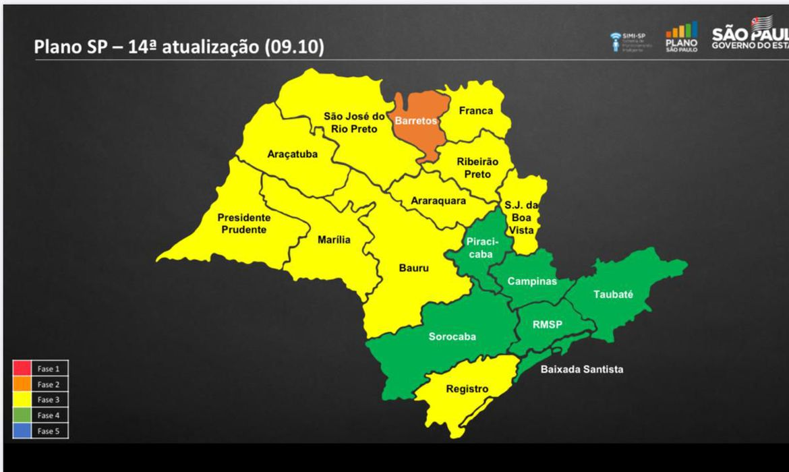
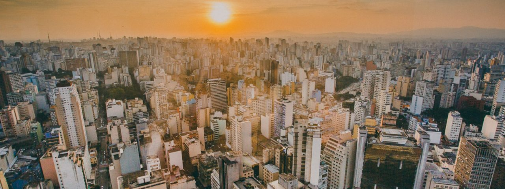
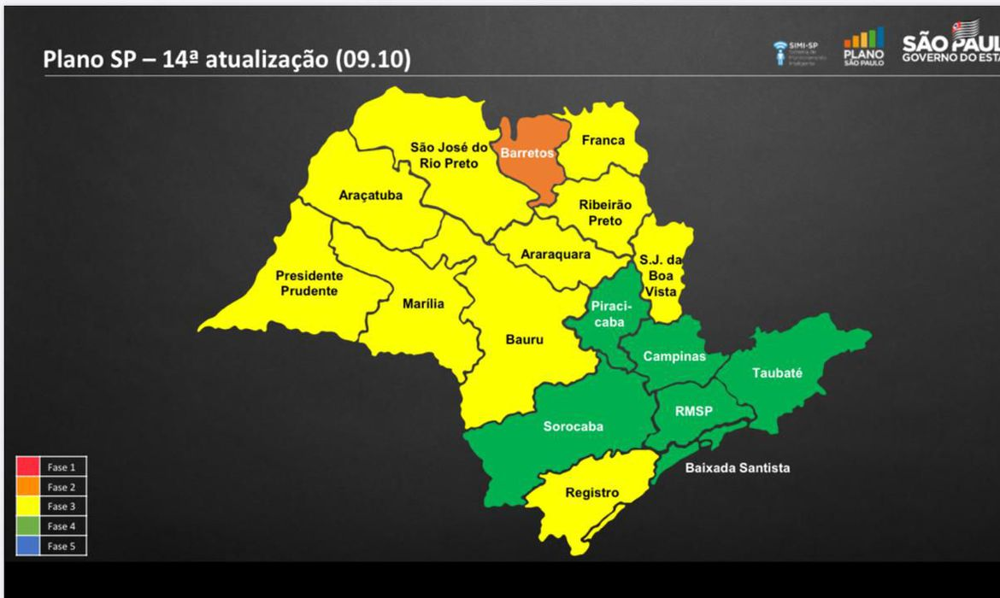
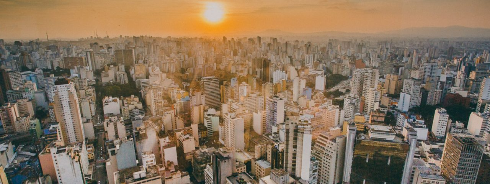
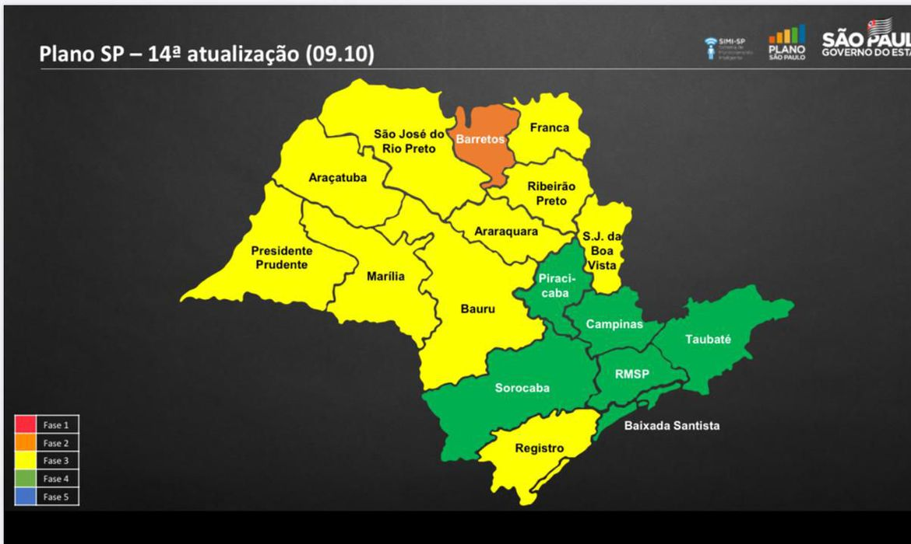
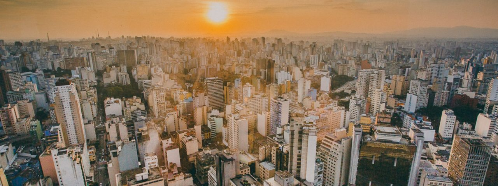
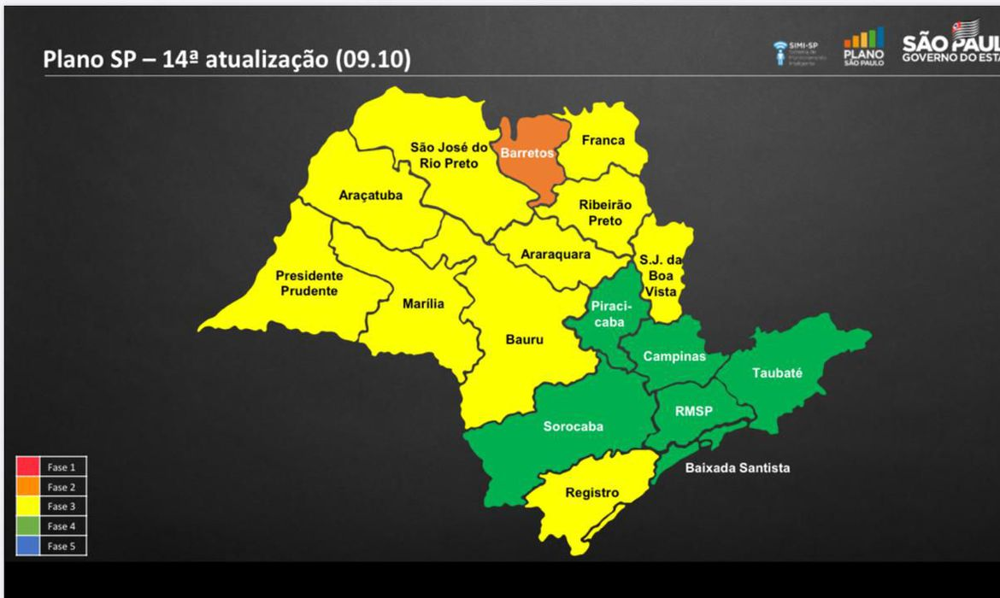
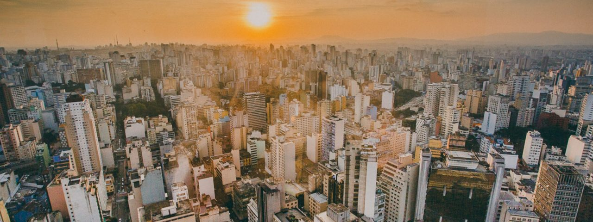
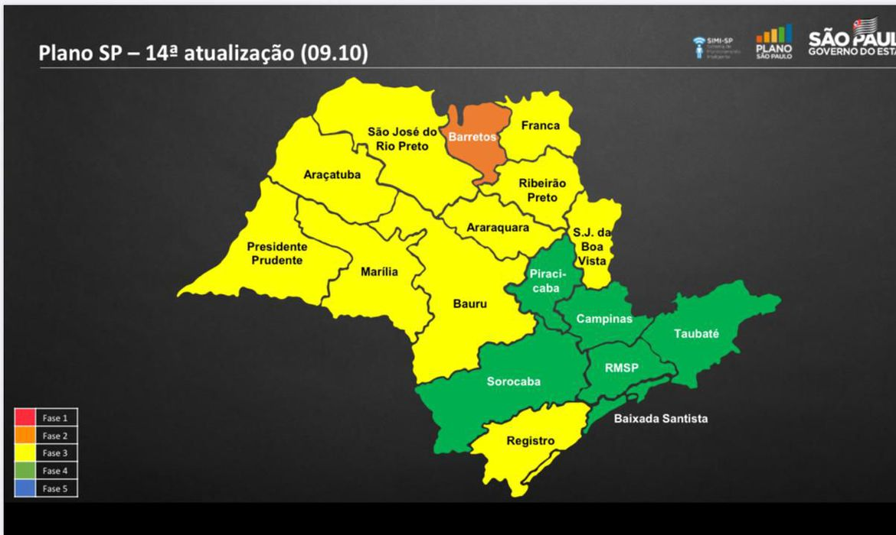
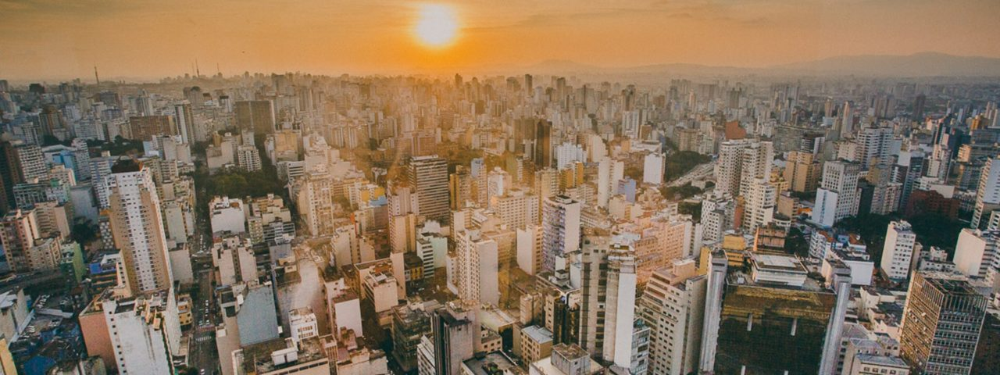
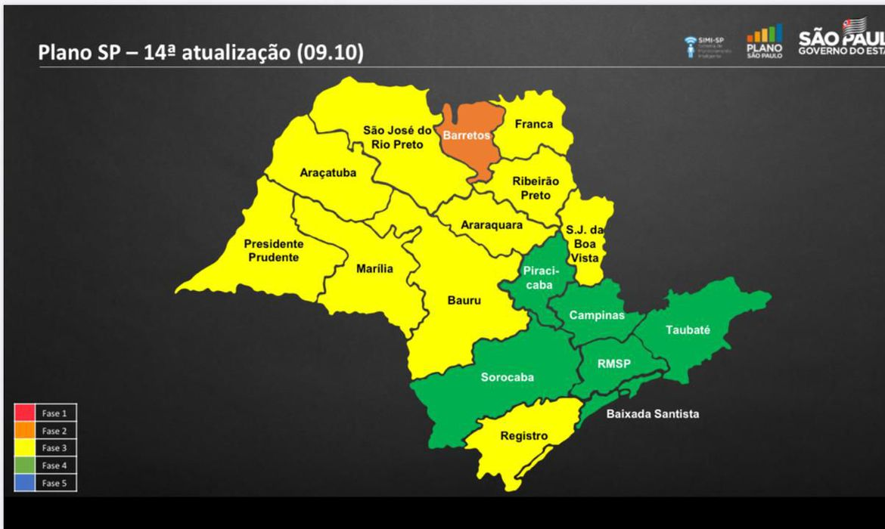
É uma das 27 unidades federativas do Brasil. Está situado na Região Sudeste e tem por limites os estados de Minas Gerais a norte e nordeste, Paraná a sul, Rio de Janeiro a leste e Mato Grosso do Sul a oeste, além do Oceano Atlântico a sudeste. É dividido em 645 municípios e sua área total é de 248 219,481 km², o que equivale a 2,9% da superfície do Brasil, sendo pouco maior que o Reino Unido. Sua capital é o município de São Paulo e seu atual governador é João Doria.

Conhecida como “Cidade-trabalho”, Osasco é destaque pelo empreendedorismo e pela força de vontade de seus moradores.De colonização italiana, Osasco teve seu povoamento iniciado por Antônio Agú, que montou a Companhia Cerâmica Industrial de Vila Osasco, no século XIX. Próximo ao Rio Tietê, o trecho antes formado por uma aldeia de pescadores e por fazendas prosperou com a produção de tijolos, telhas, tubos e cerâmicas, sendo assim iniciada a atividade industrial de Osasco.
É um município brasileiro, capital do estado homônimo e principal centro financeiro, corporativo e mercantil da América do Sul.[10] É a cidade mais populosa do Brasil, do continente americano, da lusofonia e de todo o hemisfério sul.[11] São Paulo é a cidade brasileira mais influente no cenário global, sendo, em 2016, a 11.ª cidade mais globalizada do planeta. Fundada em 1554 por padres jesuítas, a cidade é mundialmente conhecida e exerce significativa influência nacional e internacional, seja do ponto de vista cultural, econômico ou político.


 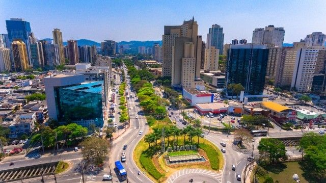
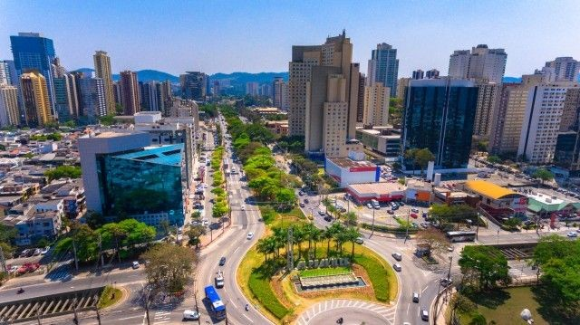
Barueri é um município da Região Metropolitana de São Paulo, no estado de São Paulo, na Região Sudeste do Brasil.A fundação de Barueri remonta à época das missões jesuíticas, em meados do século XVI.Segundo os historiadores a origem da cidade foi o aldeamento de Barueri, fundado em 11 de novembro de 1560 pelo padre José de Anchieta, que ergueu na margem direita do rio Tietê, pouco acima da confluência com o Rio Barueri.
Guarulhos é um município da Região Metropolitana de São Paulo, no estado de São Paulo, no Brasil. É a segunda cidade mais populosa do estado, foi fundada em 8 de dezembro de 1560, pelo padre jesuíta Manuel de Paiva.Existem atualmente em Guarulhos vários polos de fauna e flora, dentre os quais merecem maior destaque: Parque Estadual Cantareira (Núcleo Cabuçu), também conhecido por Reserva Estadual da Cantareira.


 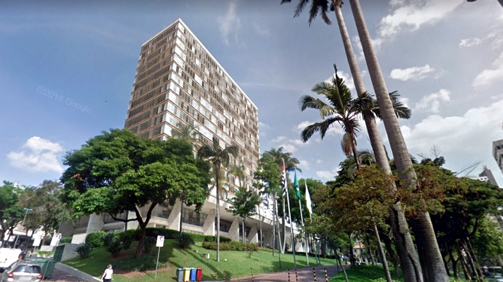
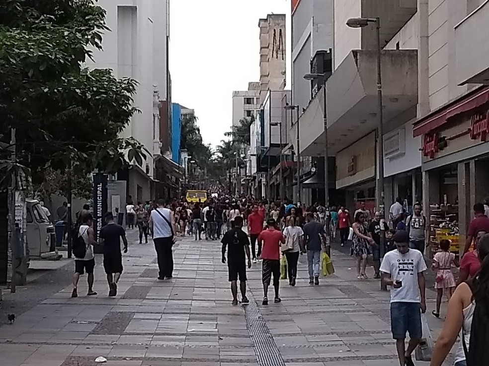
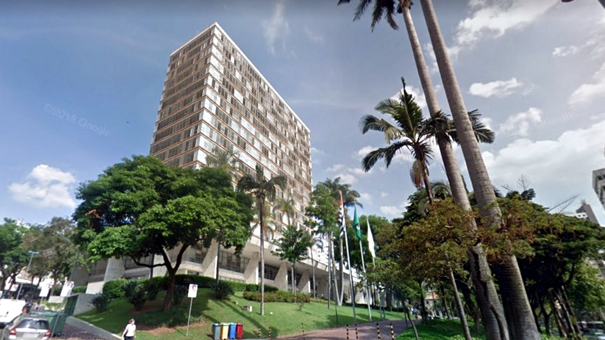
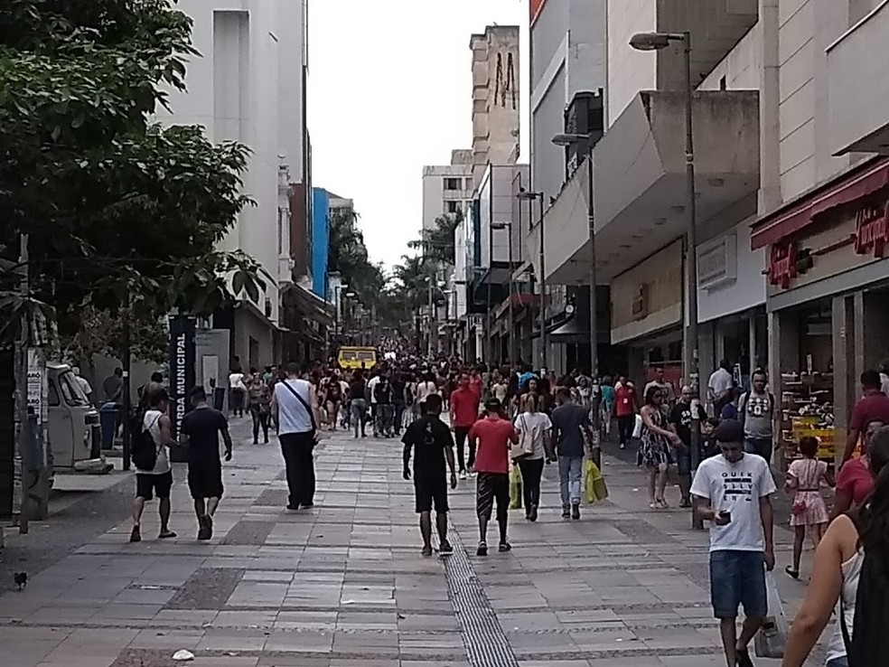
Campinas foi fundada em 14 de julho de 1774. Entre o final do século XVIII e o começo do século XX, a cidade teve o café e a cana-de-açúcar como importantes atividades econômicas. Porém, desde a década de 1930, a indústria e o comércio são as principais fontes de renda, sendo considerada um polo industrial regional.Com o décimo primeiro maior PIB entre os municípios do país, é a primeira cidade brasileira a se tornar metrópole sem ser uma capital, exercendo significativa influência nacional.
A história de Sorocaba tem início em 1599. Don Francisco de Souza, governador-geral do Brasil (entre 1591 a 1602), ainda acreditando na existência de ouro, esteve na região e levantou o pelourinho " símbolo do poder real na Nova Vila de Nossa Senhora da Ponte de Mont Serrat.A cidade é um importante polo industrial do estado de São Paulo e do Brasil, sendo que sua produção industrial chega a mais de 120 países, atingindo um PIB acima dos R$ 32 bilhões, o décimo nono maior do país, a frente de capitais como São Luís, Belém, Vitória, Natal e Florianópolis.

 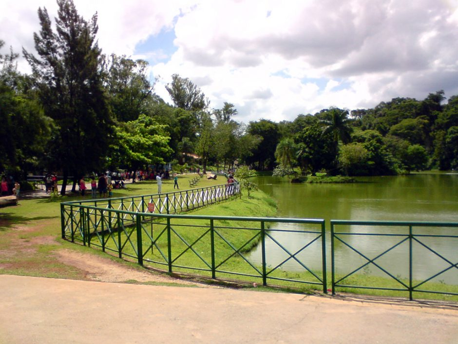
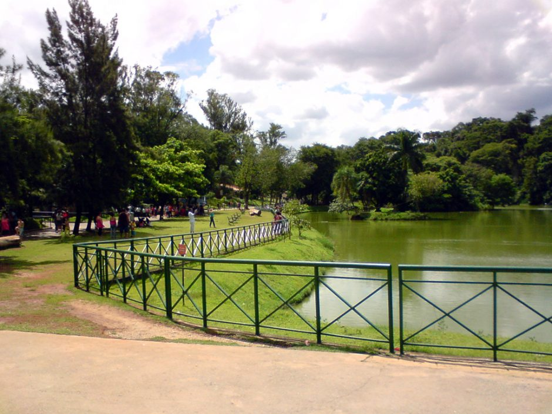


Atribui-se a fundação de Santos a Brás Cubas, sertanista português que, em 1536, recebeu a mais vasta sesmaria do litoral da Capitania de São Vicente. Em 1543, Brás Cubas instalou às margens da baía a Casa de Misericórdia de Todos os Santos para abrigar doentes dos navios que chegavam da metrópole.Com a maior participação econômica da citada região, abriga o maior porto da América Latina, o principal responsável pela dinâmica econômica da cidade ao lado do turismo, da pesca e do comércio.
Surgida no ano de 1532, foi a primeira vila da América Portuguesa, fundada por Martim Afonso de Sousa conforme ordens do rei de Portugal, dom João III, em uma ilha descoberta na expedição de Gaspar de Lemos, em 1502, que a batizou em homenagem a São Vicente Mártir.A pequena povoação se organizou e começou a ser reconhecida na Europa como eficiente ponto de parada para reabastecimento e tráfico de escravos índios. Tanto isso é verdade que o porto que aqui existia já constava em um mapa feito em 1501 e trazido por Américo Vespúcio na expedição de Gaspar de Lemos, que aqui chegou em 22 de janeiro de 1502 e batizou o local como São Vicente, em homenagem a São Vicente Mártir.
 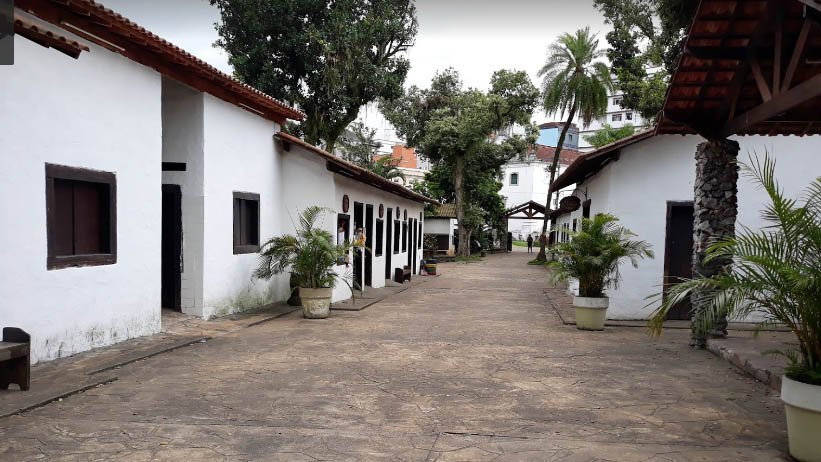
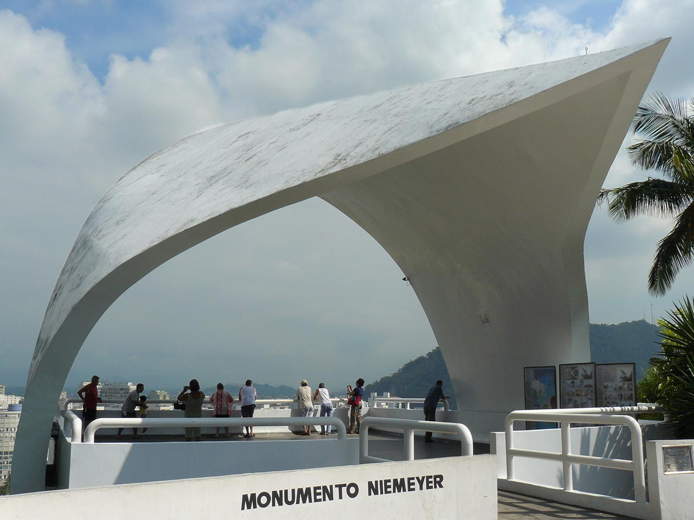
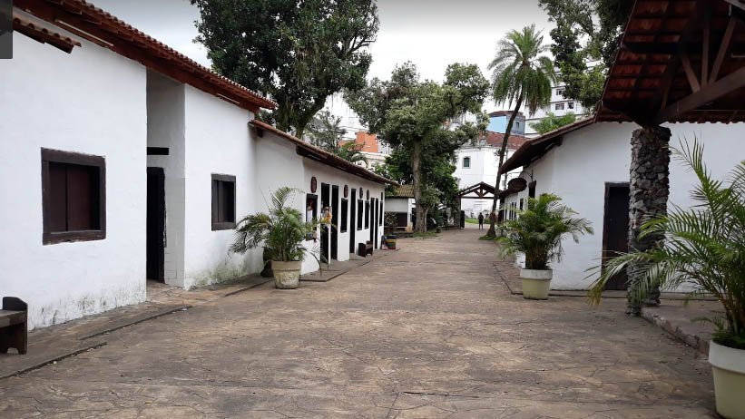
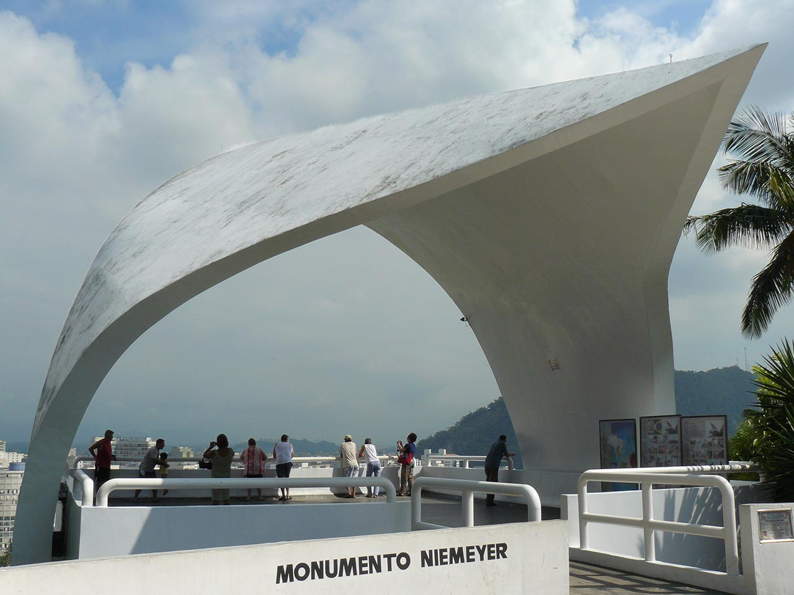
 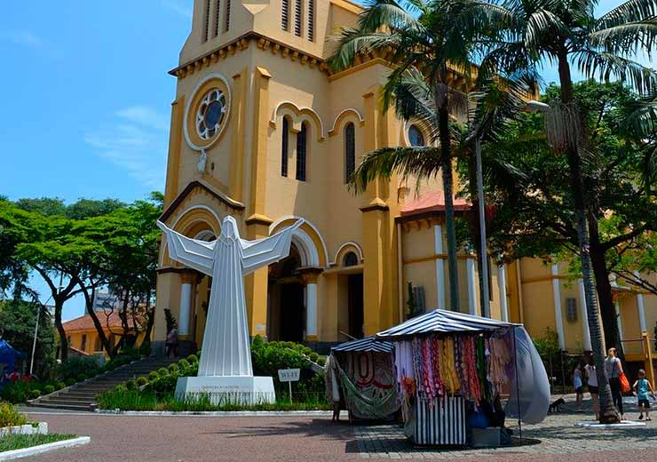
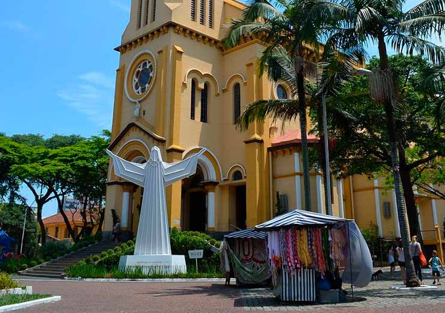
Esta vila foi fundada por João Ramalho, que se uniu à índia Bartira, filha do cacique Tibiriçá, da tribo dos Guaianases. Em 8 de abril de 1553, o seu pedido de transformar a região em que vivia em Vila foi atendido pelo governador-geral Tomé de Sousa.Os produtos comercializados por Santo André em sua maioria estiveram associados ao setor produtivo da borracha, plástico e petroquímico.
O município de São Bernardo do Campo nasceu na Borda do Campo, mesma região onde existiu a histórica Villa de Santo André da Borda do Campo (1550-1560). (Oficialmente São Bernardo do Campo reporta-se à chamada “Villa” de João Ramalho (1553) para comemorar seu aniversário de fundação, mas estudos revelam que o município tem origem bem mais recente, visto que o primitivo povoado sem deixar vestígios).
 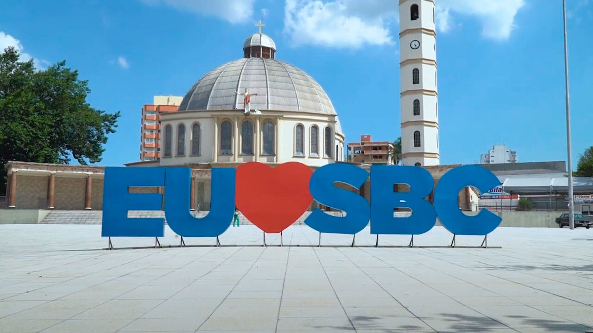
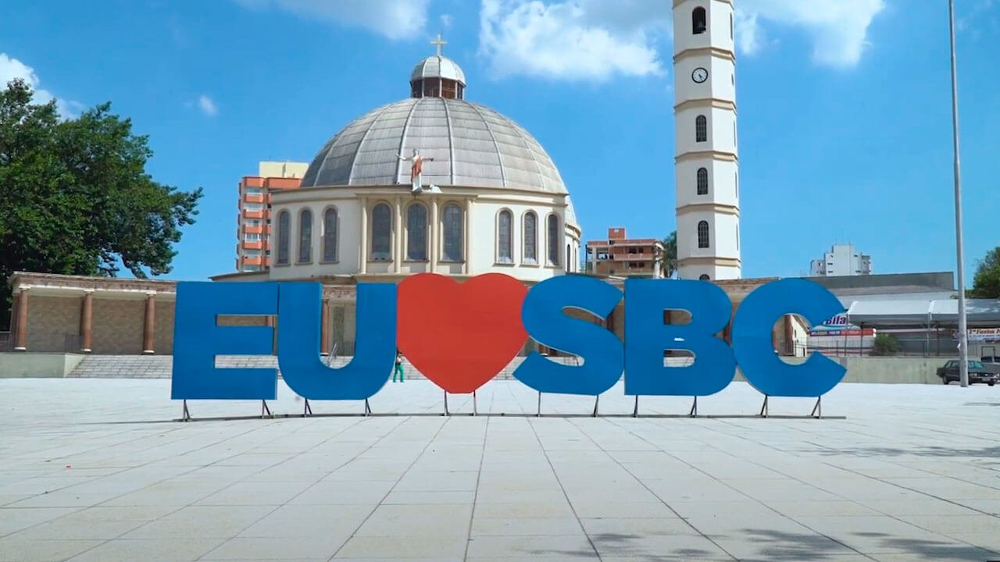